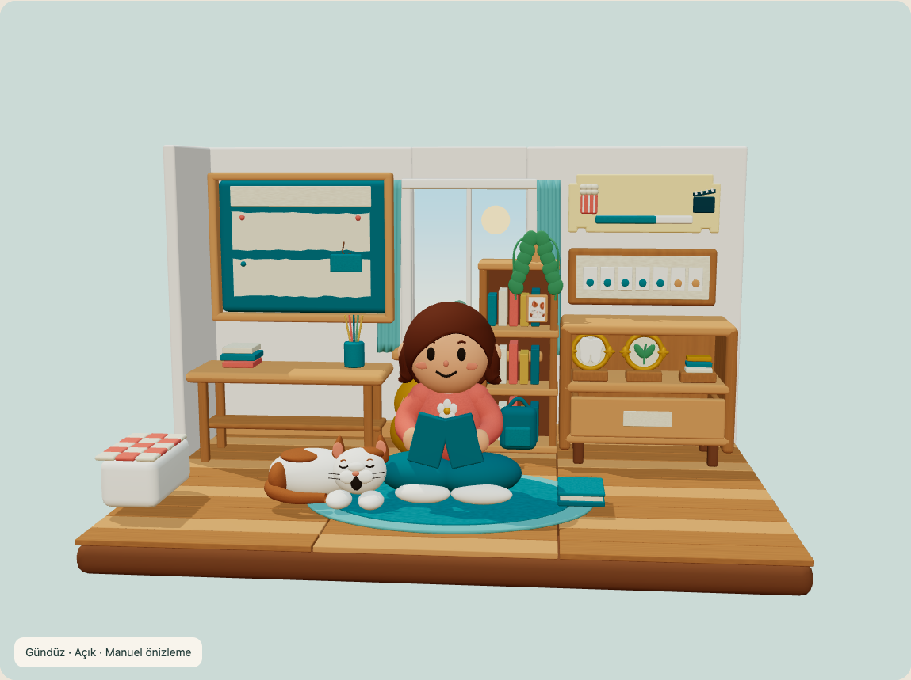

Oda işlevleri ve nesne ailesi korunur. Referansın boya dokusu, yüz/saç biçimi ve doğal animasyon kalitesi birebir eşleşmiş sayılmaz. İki görüntü de gerçek uygulama ekran görüntüsü değildir: soldaki onaylı hedef, sağdaki bu paketin 3D renderıdır.
 Onaylı hedef · metinler referans UI'sı
Onaylı hedef · metinler referans UI'sı Yeni 3D sanat adayı · Blender renderı · yazısız
Yeni 3D sanat adayı · Blender renderı · yazısızÇalışan WebGL görünümü

Blender renderının ışık kalitesi ile gerçek zamanlı önizleme aynı değildir. Mobil renderer ve kalite bütçesi henüz doğrulanmadı.

Çene/baş/kulak/kuyruk klibi · segmentli rigKorunan çekmece animasyonu